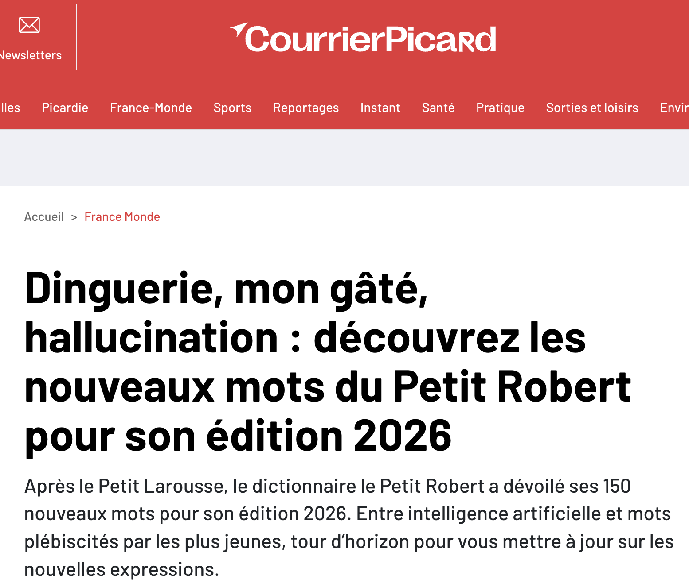
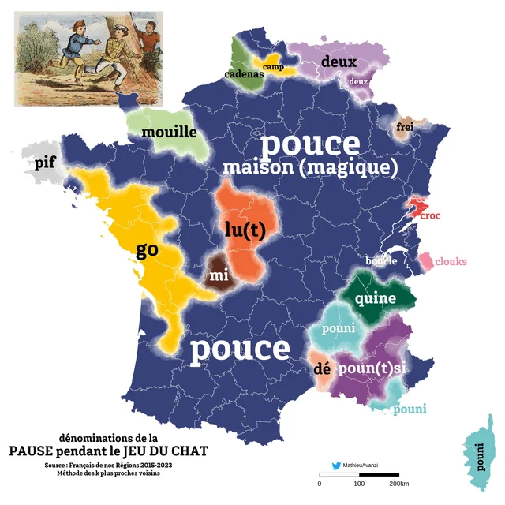
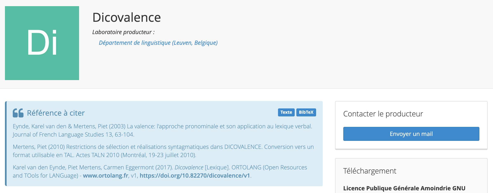
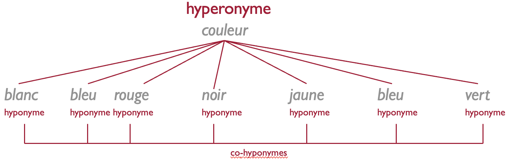
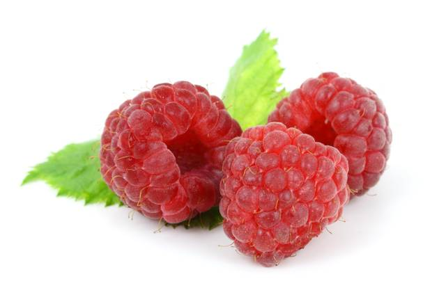
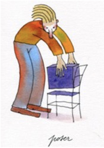
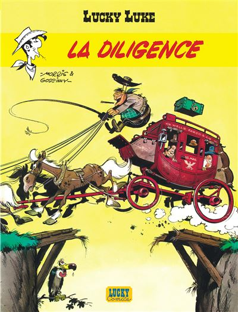
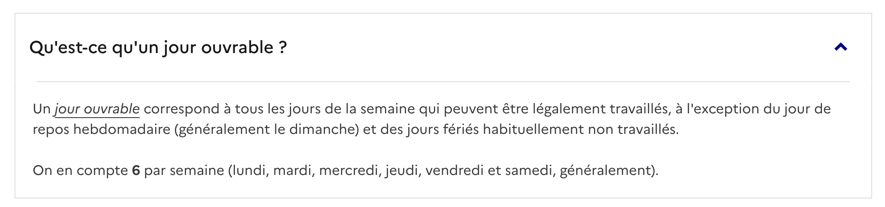

flowchart TD R["Les mécanismes du changement<br/>sémantique traditionnels"] R --> MET["Le changement<br/>métonymique"] MET --> SUB["La subjectivation"] MET --> DEL["La délocutivité"] MET --> VAL["Les structures valentielles<br/>(+ auto-conversion)"] R --> MPH["Le changement<br/>métaphorique"] R --> TAX["Le changement<br/>taxinomique"] TAX --> COH["Transfert<br/>co-hyponymique"] TAX --> GS["La généralisation<br/>et la spécialisation"] GS --> GEN["Généralisation<br/>(→ hyperonyme)"] GS --> SPE["Spécialisation<br/>(→ hyponyme)"] TAX --> ANT["Le changement<br/>anti-phrastique<br/>(+ auto-antonymie)"] R --> IA["L'intensification et<br/>l'affaiblissement de sens"] IA --> HYP["Hyperbole"] IA --> LIT["Litote"] R --> ABS["De l'ellipse<br/>à l'absorption"] R --> EP["L'étymologie<br/>populaire"]
Évolutions sémantiques
4.1 Introduction
Changement sémantique = changement au niveau du sens codé de la langue

4.1.1 Dinguerie
Origine et sens initial :
Caractère d’une personne ou d’un comportement dingue.
Action réalisée par une personne dingue.
➔ Synonyme familier : folie.
Évolution contemporaine du sens :
Quelque chose d’incroyable…
En positif : une vidéo qui fait le buzz sur les réseaux sociaux.
En négatif : une mésaventure.
// une tuerie
Synonyme figuré : tuerie (dont le sens originel est également négatif).
➔ Exemple : « Ce gâteau, c’est une tuerie ! »
« La linguistique diachronique, c’est une dinguerie »

4.1.2 Gâté
En 2020, le succès phénoménal de la chanson Bande organisée, avec en ouverture le fameux « Oui ma gâtée »

4.1.3 Hallucination
Perception pathologique de faits, d’objets qui n’existent pas, de sensations en l’absence de stimulus extérieur.
- Hallucinations visuelles, auditives
Erreur des sens, illusion.
Être le jouet d’une hallucination.
Avoir des hallucinations.
- 🚨 Résultat incorrect ou trompeur produit par une intelligence artificielle générative, avec une apparence de vérité.

4.2 Et si on remontait plus loin dans le temps…
4.2.0.1 Consigne
Retrouvez le sens d’origine en latin pour chacun des mots français ci-dessous, issus de l’évolution phonétique et sémantique du latin au français.
| Mot en latin | Mot en français | Sens du mot en Latin |
| 1. caput | chef | ____________ _ ______________ |
| 2. sapere | savoir | ____________ _ ______________ |
| 3. ponere | pondre | ____________ _ ______________ |
| 4. vivenda | viande | ____________ _ ______________ |
| 5. puta | pute | ____________ _ ______________ |
4.2.0.2 Corrigé de l’exercice
caput \(\rightarrow\) Tête (le mot “chef” désignait d’abord la tête avant d’évoluer vers le sommet/le dirigeant)
sapere \(\rightarrow\) Avoir du goût / de la saveur (a ensuite évolué vers “avoir du discernement”, puis “savoir”)
ponere \(\rightarrow\) Mettre / Poser (s’est restreint en français au fait de poser des œufs)
vivenda \(\rightarrow\) Vivres / Choses nécessaires à la vie (désignait toute nourriture avant de se restreindre à la chair animale)
puta (ou putta) \(\rightarrow\) Fille / Fillette (terme affectif en latin vulgaire qui a subi une péjoration sémantique)
D’autres exemples…
- ANCIEN FRANÇAIS : Il va chanter (‘il s’en va pour chanter’) > FRANÇAIS : Il va chanter (‘il est sur le point de chanter’)
Les motivations du changement de sens
4.3 Motivations Générales
Pourquoi ?
Efficacité : > « la réduction des efforts nécessaires pour produire le message et [la] pertinence maximale pour réaliser le but de la communication »
Expressivité : > « l’expression des sentiments, etc. »
4.4 Motivations Particulières
Expression de nouveaux concepts :
- ➔ Exemple : Périphérique informatique ➔ souris
Concepts abstraits ou éloignés de la perception :
- ➔ Exemple 1 : Baisse de tarifs ➔ baisser les prix
- ➔ Exemple 2 : Bas de la montagne ➔ le pied de la montagne
- Changements socio-culturels :
- Citation : « les changements socio-culturels »
- ➔ Exemple : Glissement de l’appellation des repas en français :
avant 16ᵉ–17ᵉ s. : disner ou desgeüner (matin) ➔ souper (après-midi)
16ᵉ–17ᵉ s. : dîner / déjeuner (midi) ➔ souper (après-midi)
création du petit déjeuner : déjeuner (matin) ➔ dîner (midi) ➔ souper (le soir)
19e s.: repas principal (dîner) ➔ soir ➔ déjeuner (midi) ➔ peti-déjeuner
- Scénarios conceptuels :
- Citation : « les relations conceptuelles ou factuelles étroites entre les éléments d’un même scénario conceptuel »
- ➔ Exemple : ‘repousser/protéger’ ➔ défendre (‘interdire’)
- Irrégularités lexicales :
- Citation : « les irrégularités lexicales : elles peuvent inciter les locuteurs à les « corriger » »
- ➔ Exemple : Refonte du verbe latin disjejunare ➔ conte vs compte
- Concepts émotionnellement marqués :
- Citation : « l’expression de concepts émotionnellement marqués (expressivité, tabou) »
- ➔ Exemple : Oiseau échassier ➔ grue (‘prostituée’)
Note speaker : - Point 4 : C’est le glissement métonymique par rapport de cause à effet dans un même contexte. - Point 5 : Corriger des anomalies lexicales par étymologie populaire ou réalignement de paradigmes. - Point 6 : Rôle important des tabous sociaux et de la recherche d’images fortes ou métaphoriques pour parler de sujets sensibles.
La propagation du changement de sens
L’assignation d’un nouveau sens ne constitue que la première étape du changement de sens.
Pour qu’il y ait un véritable changement sémantique, il est nécessaire qu’il y ait propagation du nouveau sens et que celui-ci s’intègre dans le lexique de la communauté linguistique.
Par exemple, le cas de la connotation
Dénotation vs connotation
Péjoration : Un mot à l’origine neutre ou positif acquiert une connotation négative avec le temps.
Mélioration : Un mot prend une connotation de plus en plus positive.
4.4.1 Quand un mot est employé avec un nouveau sens :
Groupe social : Il peut d’abord être employé au sein d’un groupe particulier de la communauté.
Variété de langue : Il peut être restreint à une variété spécifique de la langue.
Diffusion Il peut ensuite se répandre d’une variété à une autre (ex. passer du non-standard au bon usage).

4.4.2 Le cas de travailler
4.4.2.0.1 Le sens d’origine
Concept initial : Travailler signifie à l’origine « SE FATIGUER ».
Sens de référence pour le travail : Le verbe usuel et littéraire pour désigner l’activité était ouvrer.
4.4.2.0.2 13ᵉ s. : L’Innovation
Glissement métonymique : Emploi de travailler dans un contexte spécifique.
Scénario conceptuel : Au sein du scénario activé, le concept de fatigue est lié au travail en tant qu’activité fatigante.
Première attestation : Une occurrence isolée avec le sens moderne apparaît à la fin du 13ᵉ siècle dans un texte non littéraire.
4.4.2.0.3 14ᵉ–16ᵉ s. : Première diffusion dans l’immédiat communicatif
- Travailler commence à s’utiliser comme synonyme de ouvrer, mais est cantonné aux variantes non standard (registre familier, spontané).
4.4.2.0.4 2ᵉ moitié du 17ᵉ s. : Adoption et généralisation
Travailler fait son entrée dans le « bon usage » (norme standard/littéraire).
Il remplace progressivement ouvrer, qui finit par disparaître du lexique courant.
Lexicalisation et grammaticalisation
Grammaticalisation
Évolution du suffixe -ment
Origine : Ablatif du nom latin mens, mentis (« esprit, intention ») employé dans des syntagmes libres comme clara mente (« avec un esprit clair »).
Mécanismes :
Désémantisation (axe paradigmatique) : Perte de la valeur nominale abstraite d’« esprit » ou d’« intention ».
Passage d’un nom féminin autonome à un affixe dérivatif.
Coalescence / Agglutination (axe syntagmatique) : Fusion avec la forme adjectivale féminine pour former une seule unité morphologique (ex. claire + -ment \(\rightarrow\) clairement).
Lexicalisation
Évolution de aujourd’hui
Origine : Ancien français au jour d’hui (littéralement « au jour de ce jour », du latin hodie).
Mécanismes :
Perte de compositionalité : Le sens global (« le jour présent ») n’est plus calculable par l’addition de ses composantes grammaticales modernes (au + jour + de + hui).
Univerbation / Opacification : Fusion graphique et phonétique des éléments séparés.
Changement de statut lexical : Réutilisation ultérieure du mot déjà lexicalisé dans le pléonasme contemporain « au jour d’aujourd’hui ».
// espagnol : al día de hoy vs hoy
// italien : oggigiorno vs oggi
Définition 1 (Blank 2001) - Lexicalisation : Conventionnalisation d’une expression linguistique avec son sens comme élément du lexique d’une langue, incluant les développements ultérieurs où des unités déjà lexicalisées changent de statut au sein du lexique.
Définition 2 (Brinton & Traugott 2005) - Lexicalisation : Évolution d’expressions complexes se transformant en unités du lexique en perdant leur compositionalité et/ou leur structure interne
- ex. au jo(u)r d’hui \(\rightarrow\) aujourd’hui, gens d’armes \(\rightarrow\) gendarme
4.5 Grammaticalisation
Définition selon les critères de Lehmann (1995 [1982]) :
Perte de substance :
Axe paradigmatique : Perte de consistance phonétique et désémantisation.
Axe syntagmatique : Réduction de portée.
NoteDéfinitionAxe syntagmatique
- Axe horizontal de la combinaison. Il relie des mots présents et alignés successivement dans la chaîne parlée pour former un énoncé cohérent et grammatical.
Axe paradigmatique
- Axe vertical du choix et de la substitution. Il unit dans la mémoire des mots qui appartiennent à une même catégorie ou qui partagent des affinités de sens ou de forme.
Perte d’autonomie :
Axe paradigmatique : Intégration de l’unité dans un paradigme (accompagnée d’une décatégorialisation).
Axe syntagmatique : Cohésion syntaxique plus forte, coalescence, clitisation, agglutination.
Perte de variabilité :
Axe paradigmatique : L’expression devient obligatoire.
Axe syntagmatique : Fixation de l’ordre syntaxique.
4.5.1 Exemple : Formation du futur simple en français :
La périphrase latine [\(infinitif + habere\)] illustre ces paramètres :
Substance & autonomie : habere subit une réduction phonétique, perd son sens concret de possession (désémantisation) et sa catégorie de verbe autonome pour devenir une désinence verbale intégrée au paradigme des temps.
Portée & cohésion : Réduction de portée (de verbe principal à désinence) et coalescence complète avec l’infinitif.
Variabilité & ordre : Fixation de l’ordre (infinitif + habere, alors que l’ordre habere + infinitif était aussi possible en latin) et sélection obligatoire parmi les expressions du futur.
Définition par l’extension des contextes (Himmelmann 2004).
L’accent est mis sur l’extension des contextes d’emploi des constructions, et non plus sur la réduction de portée syntaxique .
Les 3 types d’extension (Himmelmann 2004) :
Host-class expansion : Élargissement de la classe des mots combinables avec la construction.
Extension des contextes syntaxiques : Intégration dans de nouvelles structures grammaticales.
Extension des contextes sémantico-pragmatiques : Gain de nouvelles fonctions de sens ou de discours.
Exemple : Formation du futur périphrastique (aller + infinitif)
Étape 1 (Host-class expansion) : Élargissement progressif de la classe des verbes associés (ne se limite plus aux actions nécessitant un déplacement physique).
Étape 2 (Contextes syntaxiques) : Emploi dans des structures différentes (ex. « Il va pleuvoir », où le pronom impersonnel il dépend en réalité de pleuvoir).
Étape 3 (Contextes sémantico-pragmatiques) : Utilisation en français contemporain comme alternative au futur synthétique.
Exemple : Évolution de la locution en fait
Origine latine (factum) employé comme complément d’une préposition (en + fait).
Étape 1 (Host-class expansion) : Transformation en adverbe propositionnel à valeur plutôt épistémique.
- Le mot épistémique est un adjectif qui signifie relatif à la connaissance, au savoir ou à la façon dont on acquiert et valide ce que l’on sait.
Étape 2 (Contextes syntaxiques) :
Passage à un rôle de connecteur et d’adverbe à sens pragmatique (accentue la position du locuteur).
Acquisition d’un sens intersubjectif.
Étape 3 (Contextes sémantico-pragmatiques) : Développement d’un sens pragmatique plus vague en français moderne.
Introduction de la notion de constructionnalisation (Traugott & Trousdale 2013).
Fondement : Issue de la grammaire de construction (Goldberg 2006). La langue est un réseau de constructions (mots, patrons morphologiques, structures syntaxiques).
Changement de paradigme : Abolition de la frontière étanche entre lexique et grammaire (et donc entre grammaticalisation et lexicalisation) \(\rightarrow\) Tout est constructionnalisation.
Degrés de schématicité :
Substantif (non schématique) : Mots simples (aucune variable).
Partiellement schématique : Patrons morphologiques (ex. \(Adj_{fém} + -ment\)).
Complètement schématique : Constructions syntaxiques (composées de variables).
Puisque la langue ne comporte que des constructions et que celles-ci correspondent à ce qu’on appelle traditionnellement des mots, des idiomes et des constructions syntaxiques, il n’y a plus de distinction nette entre lexique et grammaire
Les mécanismes du changement sémantique traditionnels
4.6 Le changement métonymique
Mise en situation : Devinez le sens de l’unité lexicale la plus ancienne !
Latin classique
coxa\(\rightarrow\) cuisse (Français moderne)- ‘hanche’
Latin
vigilia\(\rightarrow\) veille (Français moderne)- ‘veillée’
Latin classique
testimonium\(\rightarrow\) Ancien français tesmoin- ‘témoignage’
Ancien français
prison\(\rightarrow\) la peine d’être emprisonné (Français moderne)- ‘acte de saisir’
Latin
focus\(\rightarrow\) feu (Français moderne)- ‘foyer’
MÉCANISMES DU CHANGEMENT SÉMANTIQUE TRADITIONNELS
La Métonymie
Définition traditionnelle : Emploi d’une expression pour une autre sur la base de la contiguïté des référents.
Approche par la sémantique cognitive :
Utilisation de la notion de scénario conceptuel (frame) : structure de concepts reliés entre eux.
La contiguïté correspond aux relations entre les concepts du scénario.
Les 3 formes de glissements métonymiques au sein d’un cadre (Koch 2016) :
Figure / Ground (Premier plan / Arrière-plan) : Un élément est repoussé à l’arrière-plan (ground), tandis qu’un élément contigu passe au premier plan (figure).
- Exemple :
coxa(« hanche ») \(\rightarrow\) cuisse.
- Exemple :
Élément \(\rightarrow\) Scénario global : Un élément du cadre passe à l’arrière-plan au profit de la montée du scénario dans sa totalité.
- Exemple : Évolutions du terme bureau.
Scénario global \(\rightarrow\) Élément : Le glissement s’opère du scénario global vers un élément spécifique.
- Exemple : Évolution du latin
focus(« foyer » \(\rightarrow\) « feu »).
- Exemple : Évolution du latin
4.6.1 La subjectivation
Définitions théoriques principales :
Selon Traugott (1989, 1995b, 1999) :
Objectivité : Réfère à un événement dans le monde extra-linguistique.
Subjectivité : Représente la perspective ou l’engagement du sujet parlant dans l’événement de parole.
Mécanisme : Repose sur un glissement métonymique au sein d’un même scénario conceptuel (ex. l’ACTIVITÉ COMMUNICATIVE).
Selon Langacker (1999) :
Redéfinition comme un changement de perspective.
Le sujet de conscience, initialement repoussé à l’arrière-plan d’une scène conçue d’abord objectivement, remonte au premier plan pour imposer son point de vue.
Exemple 1 : Le verbe observer
Sens d’origine « objectif » : « Considérer avec attention » (perception visuelle ou mentale).
Sens subjectivé : « Faire remarquer » (acte de parole).
Analyse (Modèle de Traugott) : Le verbe s’intègre au scénario conceptuel de l’ACTIVITÉ COMMUNICATIVE. Ce scénario relie la perception du monde à l’affirmation.
Exemple 2 : La préposition après
Sens d’origine « objectif » : Signal de la postériorité dans le temps.
Sens subjectivé : Localisation spatiale derrière un point de repère (ex. « La cliente habitait tout en haut de la côte, après l’église »).
Analyse (Modèle de Langacker) : L’interprétation spatiale nécessite que le sujet conçoive la scène en adopting le point de vue d’un observateur qui se déplace fictivement dans l’espace.
4.6.2 La délocutivité
Processus par lequel une expression linguistique est transformée pour désigner ou accomplir un acte illocutoire.
Constitue une forme de subjectivation au sens de Traugott, car l’expression s’ancre dans la situation de parole et dans l’intention du locuteur.
Repose sur un glissement métonymique fondé exclusivement sur la contiguïté entre l’énonciation de l’expression et le type d’acte de langage accompli (Koch 2012a, Blank 1997).
Exemple d’analyse : Le mot latin …
un synonyme pour …
Sens d’origine (Objectif) : Adverbe de quantité signifiant « deux fois ».
Sens délocutif (Subjectivé) : Exclamation/interjection de demande (« Bis ! ») signifiant « demandez un da capo / recommencer une performance ».
Analyse :
Mécanisme : L’adverbe désignant la répétition (« deux fois ») vient à désigner l’acte d’énonciation lui-même et l’intention du public de faire répéter un morceau.
Contiguïté métonymique : Le glissement s’appuie sur la contiguïté directe entre le cri « Bis ! » proféré après une chanson et le type d’acte illocutoire d’injonction/demande de répétition.
Un autre exemple

4.6.3 Changement dans les structures valentielles
Note
Définition
Nombre d’actants qu’un verbe est susceptible de régir.
Monovalent : Demande un seul actant, le sujet
- ex. : il pleut, il dort.
Bivalent : Demande deux actants, le sujet et un objet direct ou indirect
- ex. : je mange une pomme, je pense à quelqu’un.
Trivalent : Demande trois actants, comme le sujet, un objet direct et un objet indirect
- ex. : je donne quelque chose à quelqu’un
Le dictionnaire de valence DICOVALENCE est une ressource informatique qui répertorie les cadres de valence de plus de 3700 verbes simples du français. Par cadre de valence on entend traditionnellement le nombre et la nature des compléments valenciels du verbe, y compris le sujet, avec mention de leur fonction syntaxique.

Les structures valentielles d’un verbe correspondent aux scénarios conceptuelsassociables à son action.
Une modification dans les restrictions sélectionnelles (les arguments qu’un verbe sélectionne) produit des glissements métonymiques au sein de ce scénario.
Exemple d’analyse : Le verbe panser
Ancien français : Signifiait « soigner, traiter (un malade) ».
Français contemporain : Signifie « soigner (une partie du corps lésée) en y appliquant un pansement ».
Mécanisme du changement :
Métonymie Partie-Tout (Synecdoque) : Le complément d’objet direct initial (le malade) est remplacé par la partie du corps.
Incorporation de l’instrument : Le moyen stéréotypique du soin (le pansement) est directement intégré dans le sens du verbe.
L’Auto-conversion (ou inversion de la perspective d’actants)
Définition théorique :
Possibilité pour un même terme (verbale ou nominale) d’exprimer deux perspectives différentes ou opposées au sein d’un seul et même scénario conceptuel.
Entraîne une réorganisation ou une permutation de l’ordre des actants dans la syntaxe.
Exemple 1 : Louer
Latin originel (
locare) : « Placer », puis « donner à loyer ».Évolution (depuis l’Ancien Français, ex. Chanson de Roland) : Extension au sens opposé « prendre à loyer ».
Explication métonymique : Dans des contextes ambigus du point de vue de l’interlocuteur (ex. « chambre à louer »), la perspective de l’action s’est inversée entre le bailleur et le preneur.
Exemple 2 : Hôte
- Mécanisme : Auto-conversion nominale désignant à la fois celui qui reçoit (« l’invitant ») et celui qui est reçu (« l’invité ») au sein du même scénario de l’HOSPITALITÉ.
4.7 Le changement métaphorique
Domaine source → Domaine cible : Projection partielle des connaissances d’un domaine d’expérience concret (source) vers un autre domaine (cible).
Nature des connaissances transférées : Ce ne sont pas de simples traits sémantiques, mais des connaissances du monde (extra-linguistiques) issues de nos scénarios conceptuels.
Unidirectionnalité : Tendance générale à utiliser le concret et l’expérience corporelle pour appréhender et exprimer l’abstrait.
‼️ Métaphore vs Métonymie :
Métaphore : Relation de similarité mettant en rapport deux scénarios conceptuels différents. La similarité peut être construite lors de l’acte d’interprétation.
Métonymie : Relation de contiguïté opérant au sein d’un seul et même scénario conceptuel.
4.7.0.1 Types de changements métaphoriques et exemples d’analyse
1. Métaphores par comparaison / Catachrèses (Création de dénominations) :
Exemple 1

Optical Computer Mouse at ₹ 300/piece | Coimbatore | ID: 10097223062 Source : L’animal.
Cible : L’appareil de pointage informatique.
Analyse : Transfert basé sur des caractéristiques de l’apparence externe (forme globale, câble ressemblant à une queue).
Exemple 2

Chevalet (peinture) — Wikipédia Source : Ancien français chevalet (« petit cheval »).
Cible : Support en bois (Français moderne).
Analyse : Catachrèse attribuant un nom à un objet inanimé par analogie de forme ou de fonction portante avec l’animal.
Exemple 3

Pinkfong GIFs on GIPHY - Be Animated Source : L’animal prédateur.
Cible : « Personne cupide et impitoyable en affaires ».
Analyse : Le transfert s’appuie uniquement sur un sous-ensemble prototypique du domaine source (l’image de l’animal agressif et dangereux), en ignorant les espèces non dangereuses.
4.7.0.2 Métaphores basées sur la cooccurrence expérientielle (Métaphores primaires) :
Exemple

Monter :
Évolution : De l’Ancien Français monter (« se déplacer du bas vers le haut ») au Français moderne « les prix montent ».
Analyse : Repose sur la métaphore conceptuelle LE PLUS EST EN HAUT. Il n’y a pas de similarité physique entre quantité et hauteur, mais une cooccurrence régulière dans l’expérience (ex. remplir un récipient fait monter le niveau physique).
4.8 Le changement taxinomique

4.8.1 Transfert co-hyponymique
Changements sémantiques « horizontaux » s’effectuant entre deux éléments situés au même niveau taxinomique.
Les deux termes ne sont ni hyponymes, ni synonymes, ni antonymes l’un de l’autre, mais sont tous deux subordonnés au même concept superordonné (hyperonyme).
Distinction Mécanisme vs Motivation : Le transfert co-hyponymique constitue le mécanisme formel du changement, tandis que l’euphémisme, la péjoration ou les changements d’environnement fournissent les motivations pragmatiques (Blank 1997).
Exemple 1
Origine (Latin) :
sorex(« musaraigne »).Évolution (Français) : Souris.
Hyperonyme commun : « Petit rongeur / mammifère ».
Analyse : Glissement horizontal entre deux espèces proches partageant le même concept superordonné.

Exemple 2
Origine (Français) : Framboise.
Évolution (Créole réunionnais) : Frãmbwaz (« myrtilles rouges »).
Hyperonyme commun : « Petit fruit rouge ».
Analyse : Transfert co-hyponymique motivé par le changement de cadre de vie et la recherche d’une dénomination pour une plante locale.

4.9 La péjoration (ou péjoration)
- **Définition et mécanisme :** Un mot s'utilise de plus en
plus avec une connotation négative, si bien que son sens
évolue progressivement vers un sens négatif.
- **Citation de Michel Bréal :** *« La péjoration est une
disposition très humaine qui nous porte à voiler, à
atténuer, à déguiser les idées fâcheuses, blessantes ou
repoussantes »* (Bréal 1897/1924: 100).
- **Principe d'apparition :** *« Pour désigner le choquant,
nous utilisons, par euphémisme, des mots sans connotation
particulière, mais qui subissent par la suite une péjoration
»*.
- **Exemples :**
- **Français *amateur*** : de « personne qui aime qqch » à
« personne qui manque de professionnalisme ».
- **Latin *mentire*** : de « imaginer » à « mentir ».
- **Anglais *villain*** : de « personne qui travaille dans
une villa ou une propriété agricole » $\rightarrow$ «
fermier, homme de basse classe » $\rightarrow$ « homme
dépravé, criminel ».
## L'amélioration (ou péloration positive)
- **Définition et mécanisme :** Un mot s'utilise de plus en
plus avec une connotation positive, si bien que son sens
évolue progressivement vers un sens positif (=
amélioration).
- **Citation de Michel Bréal :** *« La politesse a ses
raffinements singuliers, l’affection a de curieux détours
qui font que des termes à signification défavorable perdent
ce qu’ils avaient de fâcheux. L’amitié, comme si elle était
en peine d’adjectifs appropriés, change le blâme en éloge et
fait du reproche une louange plus savoureuse »* (Bréal
1897/1924: 102).
- **Exemples :**
- **Latin *casam*** (« hutte, cabane ») $\rightarrow$
**Italien et espagnol *casa*** (« maison »).
- **Latin *caballum*** (« une rosse, un mauvais cheval ;
un cheval vieux, malade ou sans vigueur ») $\rightarrow$
**Français *cheval***.
- **Latin *villam*** (« ferme ») $\rightarrow$ **Français
*ville***.4.9.1 La généralisation et la spécialisation
- Généralisation : Le mot devient un hyperonyme de lui-même (son extension s’élargit, le sens perd des traits spécifiques).
- Spécialisation : Le mot devient un hyponyme de lui-même (son extension se réduit, le sens intègre un trait spécifique supplémentaire).
4.9.2 Généralisation (Passage au niveau hyperonymique supérieur) :
Arriver
Latin (
adripare) : « Arriver à la rive ».Français moderne : « Arriver (n’importe où) ».

4.9.3 Spécialisation (Passage au niveau hyponymique inférieur)
| Viande |
|---|
| Pondre |
::: side-by-side - Latin (ponere) : « Mettre, poser ». |
| - Français moderne : « Poser des œufs ». |
 ::: |
Étude de cas complexe : L’évolution en chaîne de Pigeon
Spécialisation initiale :
Latin
pipio(« jeune oiseau ») → Ancien Françaispijon(« jeune pigeon »).Analyse : Intégration d’un élément supplémentaire par contiguïté au sein du scénario conceptuel du MARCHÉ (pigeons consommables, dressables ou vendus sur les marchés).
Généralisation subséquente :
« Jeune pigeon » → « Pigeon comestible » → « Pigeon ».
Analyse : Remontée du niveau taxinomique inférieur au niveau supérieur avec suppression des relations de contiguïté contextuelles, mettant au premier plan les similarités co-taxinomiques.
Motivations pragmatiques (ex. Euphémisme) :
Exemple : Membre
Latin originel : Toute partie du corps qui pend du tronc.
Évolution (par spécialisation / euphémisme) : Emploi restreint pour désigner spécifiquement le membre viril.
4.10 Les changements sémantiques basés sur le contraste
4.10.1 Le Changement Anti-phrastique (Koch 2016, Blank 1997)
- Changement sémantique fondé sur une relation de contraste au niveau des connotations d’un mot.
- Souvent motivé par l’euphémisme afin de contourner un tabou lié au référent désigné.
| | Belette | |:—- ——————————————————————-| | ### Le Changement Auto-antonymique | | - Processus sémantique rare par lequel un mot en vient à prendre le sens de son propre antonyme. | | - Se distingue de l’auto-conversion (hôte) : l’auto-conversion permute deux angles d’un même scénario d’actants, tandis que l’auto-antonymie attribue deux valeurs sémantiques opposées/contradictoires au même terme. | |
| Sacré |
- Latin originel (sacer) : « Saint, auguste, consacré aux dieux ». |
| - Français moderne : Conservé au sens de « holy/saint », mais étendu au sens de « maudit, détestable » (ex. « Un sacré pétrin »). |
| - Analyse : Ce glissement s’est développé au sein d’expressions taboues ou de jurons, où l’évocation du domaine sacré s’est chargée d’une valeur négative par inversion pragmatique. |
4.11 L’intensification et l’affaiblissement de sens
- L’intensification et l’affaiblissement ne constituent pas des mécanismes de changement sémantique autonomes.
4.11.1 Hyperbole
Changement sémantique dû à une exagération dans le sens d’un
dépassement :
- **angl. terrible** ‘terrible’ / **horrible** ‘horrible’ vs
**terribly strong** / **horribly strong** ‘très fort’
- **lat. extonnare** ‘frapper par le tonnerre’ \> **fr. étonner**
‘surprendre par quelque chose d’extraordinaire ou d’inattendu’ :
on est étonné par qqch comme si on est frappé par le tonnerre4.11.2 Litote
Changement sémantique dû à une exagération dans le sens d'une
minimisation. Par ex. : l'emploi d'une négation pour qqch de positif
:
- *fr. c'était pas triste* pour *c'était sympa*
- *fr. c'est pas évident* pour *c'est compliqué*- certains estiment doivent être analysés comme des effets ou conséquences découlant des mécanismes fondamentaux (métaphore, métonymie, antiphrase, transfert co-hyponymique).
Analyse de cas : L’évolution de belette
Mécanisme initial : Changement antiphrastique (par motivation euphémique).
Effet 1 (Affaiblissement) : L’emploi de belete (« petite belle ») pour masquer la réalité de l’animal nuisible (mostoile) produit un affaiblissement sémantique par dissimulation.
Effet 2 (Intensification) : Une fois belette devenu le terme standard, la charge sémantique s’intensifie à nouveau pour désigner pleinement le référent.
Conclusion : L’affaiblissement et l’intensification sont les effets pragmatiques et diachroniques du processus antiphrastique originel, et non sa cause ou son mécanisme structurel.
| ## De l’ellipse à l’absorption |
| - Conception traditionnelle (ex. Ullmann) : L’ellipse est perçue comme un transfert de sens entre deux lexèmes en vertu de leur contiguïté syntagmatique dans un groupe nominal (carrosse de diligence \(\rightarrow\) diligence). |
| - Critique de Blank (1997) : L’ellipse n’est pas un mécanisme de changement sémantique direct du groupe composé vers le terme simple. Le sens de la locution d’origine (carrosse de diligence) ne change pas en soi. |
Diligence
Mécanisme réel : Le terme simple (diligence) acquiert un nouveau sens par association métonymique avec la structure complexe complète dans laquelle il figurait.
Double identité sémantique du terme simple :
Sens d’origine : « Activité empressée, rapidité dans l’exécution ».
Nouveau sens acquis par absorption : « Voiture tirée par un ou des chevaux ».
Conclusion : Le changement sémantique s’établit entre les deux sens du terme simple et non entre le terme composé et le mot abrégé. Blank propose donc le concept d’absorption pour décrire précisément ce glissement de sens.

4.12 L’étymologie populaire |
- Statut théorique (Blank 1997, Koch 2016) : |
- Conception traditionnelle (ex. Ullmann) : Traitée comme un mécanisme autonome de changement sémantique fondé sur la réinterprétation de la forme d’un mot par analogie avec un autre terme phonétiquement proche. |
- Analyse cognitive / métonymique : L’étymologie populaire n’est pas un mécanisme isolé, mais un changement métonymique qui s’opère au sein d’un même scénario conceptuel à la suite de la perte de motivation de la forme d’origine. |
- Conception traditionnelle (ex. Ullmann) : Traitée comme un mécanisme autonome de changement sémantique fondé sur la réinterprétation de la forme d’un mot par analogie avec un autre terme phonétiquement proche. |
- Analyse cognitive / métonymique : L’étymologie populaire n’est pas un mécanisme isolé, mais un changement métonymique qui s’opère au sein d’un même scénario conceptuel à la suite de la perte de motivation de la forme d’origine. |
- Exemple d’analyse : L’adjectif ouvrable
Jour ouvrable
Forme & Sens : Dérivé du verbe ouvrer (« travailler »).
Définition : « Consacré au travail ».
Changement : Disparition du verbe ouvrer du lexique actif, rendant le mot opaque.
Réinterprétation : Rapprochement phonétique et sémantique avec le verbe ouvrir.
Nouveau sens : « Jour où les magasins/bureaux sont ouverts ».

Changements de sens populaires
4.13 Vue d’ensemble
4.14 Exercice : Quelles évolutions sémantiques observez-vous ?
4.14.1 Série A (1 à 5)
- lat. rusticus « relatif à la campagne » > « simple, peu cultivé »
- lat. caput « tête » > fr. chef « responsable »
- fr. fainéant « paresseux », compris comme faire + néant, mais issu de a.fr. faignant « qui fait semblant »
- Il a acheté un quotidien.
- angl. lure « leurre de plumes pour rappeler les faucons » > angl. lure, fr. leurre « artifice pour attirer et tromper »
AstuceCorrection 1 à 5
- Changement métonymique, avec un effet de péjoration : le lieu est associé à ses habitants, puis au manque d’éducation qu’on leur prête.
- Changement métaphorique : la tête dirige le corps, le chef dirige un groupe.
- L’étymologie populaire : faindre disparaît, faignant devient opaque et il est réanalysé en fait + néant.
- De l’ellipse à l’absorption : journal quotidien > quotidien.
- Changement métaphorique, puis changement taxinomique > généralisation, avec péjoration : l’appât du fauconnier devient tout artifice qui trompe.
4.14.2 Série B (6 à 10)
- fr. maîtresse « femme qui émet des règles, qui contrôle » > « femme avec laquelle un homme a une relation hors mariage »
- Marie est une perle.
- fr. mail < a.fr. malle « sac, coffre » > « voiture de la malle-poste » > « courrier transporté ainsi » > « courrier » > « courrier électronique »
- all. Herr : titre réservé aux gentilshommes > titre pour tout homme adulte
- fr. professeur pour s’adresser à n’importe quel enseignant
AstuceCorrection 6 à 10
- Changement taxinomique > spécialisation, avec un effet de péjoration : la « dame qui règne sur le cœur » se restreint à la relation illégitime.
- Changement métaphorique (effet mélioratif) : la perle est rare et précieuse, sans contiguïté avec Marie.
- Chaîne : changement métonymique (contenant > véhicule > contenu), puis changement taxinomique > généralisation (tout courrier), puis absorption (e-mail > mail).
- Changement taxinomique > généralisation, avec un effet d’affaiblissement : le trait [+ noble] disparaît.
- Changement taxinomique > généralisation, motivé par la politesse.
4.14.3 Série C (11 à 15)
- fr. armes « réserve d’armes, arsenal » > armoire
- lat. salarium « ration de sel du soldat (solde pour acheter du sel) » > fr. salaire
- lat. homo « être humain » > « être humain masculin »
- lat. villa « ferme » > fr. ville
- lat. traditor « celui qui rend (l’Écriture sainte) » > fr. traître « celui qui trahit »
AstuceCorrection 11 à 15
- Changement métonymique (contenu > contenant).
- Changement métonymique (le sel > l’argent pour l’acheter), puis changement taxinomique > généralisation (toute rémunération).
- Changement taxinomique > spécialisation : le trait [+ masculin] s’ajoute.
- Changement métonymique (élément → scénario global), avec généralisation : le domaine désigne l’agglomération formée autour.
- Changement métonymique (livrer les Écritures = trahir, dans le scénario des persécutions), puis généralisation, avec péjoration.
4.14.4 Série D (16 à 20)
- fr. saisir « prendre » > « comprendre »
- fr. choucroute, compris comme chou + croûte, mais issu de l’alsacien surkrut « herbe amère »
- fr. vélocipède > vélo
- fr. drap « étoffe résistante de laine » > « drapeau, étendard »
- néerl. automobiel « qui avance par soi-même » > auto « voiture »
AstuceCorrection 16 à 20
- Changement métaphorique (métaphore primaire : COMPRENDRE C’EST SAISIR).
- L’étymologie populaire : réanalyse en chou + croûte ; la forme est remotivée, le référent ne change pas.
- Piège : troncation. Changement de forme, pas de sens ; hors hiérarchie.
- Changement métonymique (matière > objet), avec changement taxinomique > spécialisation.
- De l’ellipse à l’absorption (voiture automobile > automobile), puis troncation (auto).